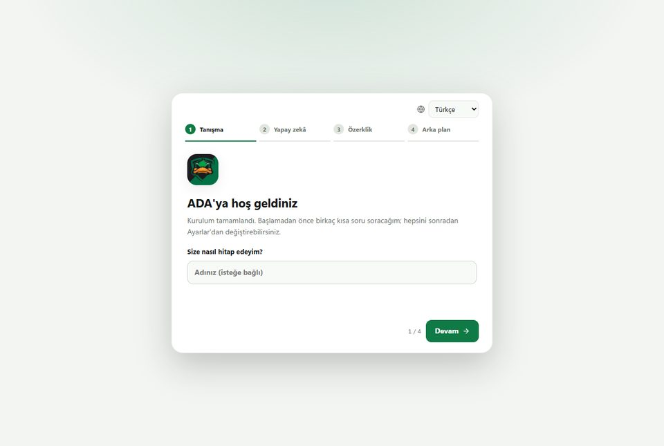
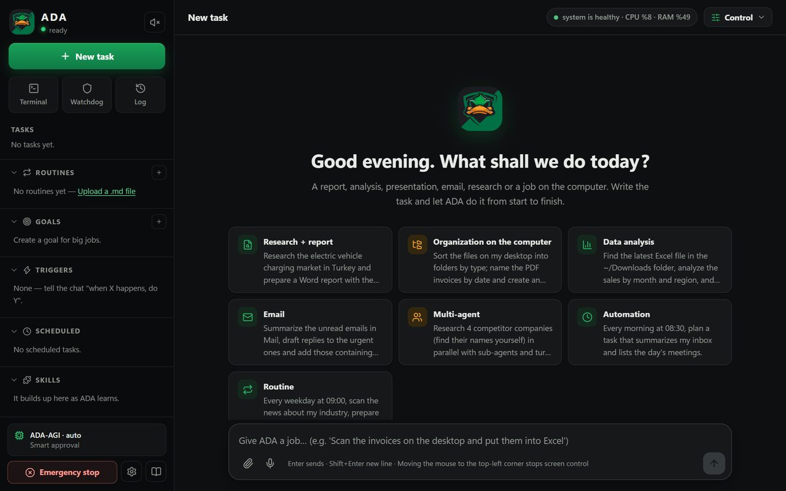
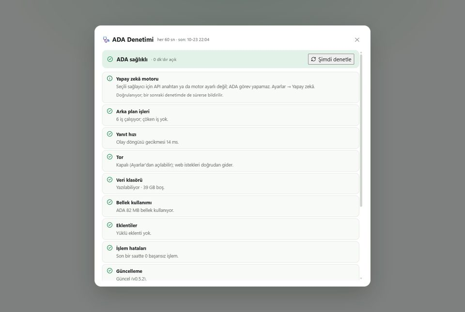

Faturalardan Excel tablosu
Klasördeki PDF faturaları okur; tarih, firma, tutar ve KDV'yi tek bir Excel dosyasında toplar.
Örnek"Masaüstündeki Faturalar klasörünü tara, hepsini Excel'e dök, aylık toplamı da ekle."
İşi yazın, ADA yapsın: faturaları Excel'e döker, rapor hazırlar, araştırır, dosyaları düzenler. Verileriniz bilgisayarınızda kalır.
Windows 10 / 11 · 64 bit · yönetici yetkisi gerekmez



Ne istediğinizi günlük dille yazın. ADA dosyaları açar, internette araştırır, gerekirse ekranı kullanır ve sonucu Word, Excel ya da PDF olarak teslim eder.
Klasördeki PDF faturaları okur; tarih, firma, tutar ve KDV'yi tek bir Excel dosyasında toplar.
Rutinler kendiliğinden her gün çalışır. Siz gelmeden sektör haberlerini ya da günün raporunu hazırlar.
İnternette araştırır, rakipleri ve fiyatları karşılaştırır, kaynakları belirtilmiş bir Word raporu yazar.
Dağınık klasörleri türe ve tarihe göre ayırır, dosyaları anlaşılır biçimde yeniden adlandırır.
Arayüz Türkçe dahil 10 dilde. Hangi dilde yazarsanız o dilde yanıt verir, belgeleri o dilde hazırlar.
ADA bilgisayarınızda çalışır; hesap ya da bizim bir sunucumuz yoktur. Ollama, LM Studio gibi yerel modellerle hiçbir şey dışarı çıkmadan çalışabilir.
ADA-AGI yönlendiricisi yerel modeller ile eklediğiniz bulut anahtarları (ücretsiz Gemini, Claude, OpenAI, Groq…) arasından işe uygun olanı seçer. İsterseniz her mesajda modeli kendiniz seçersiniz; bir model takılırsa iş sonrakiyle sürer.
İlk açılışta önerilir: web aramaları ve sayfa okuma Tor üzerinden gider, IP adresiniz sitelerden gizlenir. İstemezseniz hiçbir şey indirilmez.
Ne zaman onay isteyeceğini siz seçersiniz. Tek tuşla acil durdurma, her işlemin kaydı, değişen dosyaların yedeği ve sistemi izleyen Gözcü hazırdır.
iPhone uygulamasıyla aynı Wi-Fi ağında QR kodla eşleşin; telefondan iş verin, onay verin, sonuçları görün, terminal kullanın.
Windows'ta ADA-Setup.exe dosyasını çalıştırın (Mac için .dmg). Yönetici yetkisi gerekmez.
En kolayı ücretsiz Google Gemini anahtarı; kurulum ekranına yapıştırmanız yeter. Anahtar istemiyorsanız Ollama ile yerel model kullanın, ADA kendisi bulur.
Ne istediğinizi Türkçe yazın. ADA adım adım ilerler, gerektiğinde onay ister ve sonucu dosya olarak teslim eder.
Güncellemeler uygulamanın içinden tek tıkla kurulur: Kontrol → Güncelle.
Evet, ADA'yı kullanmak ücretsizdir. Bulut yapay zekâ sağlayıcısı kullanırsanız o sağlayıcının kendi ücreti olabilir; Gemini'nin ücretsiz anahtarı ve bilgisayarınızda çalışan yerel modeller ücretsizdir.
ADA yalnızca bilgisayarınızda çalışır; hesap açmanız gerekmez ve bizim bir sunucumuz yoktur. API anahtarlarınız ve dosyalarınız bilgisayarınızda kalır.
Bulut modeli kullanırsanız yalnızca iş için gereken içerik seçtiğiniz sağlayıcıya gönderilir. Yerel model (Ollama, LM Studio…) kullanırsanız hiçbir şey dışarı çıkmaz.
Kurulum dosyası Windows'un tanıdığı ücretli bir sertifika yerine kendi sertifikamızla imzalı. Bu yüzden Windows SmartScreen ilk çalıştırmada "bilinmeyen yayımcı" uyarısı gösterir. Devam etmek için:
Dosyayı yalnızca bu sayfadan ya da GitHub sürümler sayfasından indirin.
Mac: Evet. Apple Silicon (M1–M4) ve Intel Mac için ayrı .dmg dosyaları var. Mac sürümü Apple tarafından onaylanmış (notarize) değil; ilk açılışta macOS engellerse Sistem Ayarları → Gizlilik ve Güvenlik → Yine de Aç adımını kullanın.
iPhone: iPhone uygulaması bilgisayarınızdaki ADA'nın yardımcısıdır: aynı Wi-Fi ağında QR kodla eşleşir, telefondan iş verir, onay verir, terminal açarsınız. Henüz herkese açık dağıtılmıyor, yakında.
Varsayılan ayarda riskli işlemlerden önce onay ister, değiştirdiği dosyaların yedeğini alır ve yaptığı her işlemi kaydeder. Güvenli modda bilgisayarı kapatma ya da disk silme gibi komutlar hiç çalışmaz. Acil durdurma düğmesi tüm işleri tek tıkla durdurur.
Yine de ADA yeni bir uygulama; önemli verilerinizin yedeğini almanızı öneririz.
Kısmen. ADA'nın eklenti çekirdeği Open Kernel MIT lisansıyla GitHub'da açıktır; kendi araçlarınızı ve kurallarınızı Python eklentileriyle ekleyebilirsiniz. Uygulamanın çekirdeği kapalı kaynaktır.
Ücretsiz · Türkçe · Verileriniz bilgisayarınızda